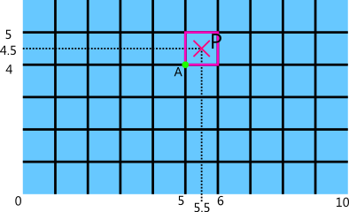
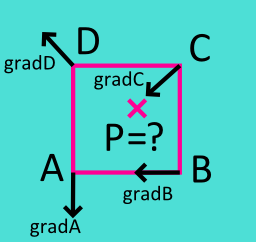
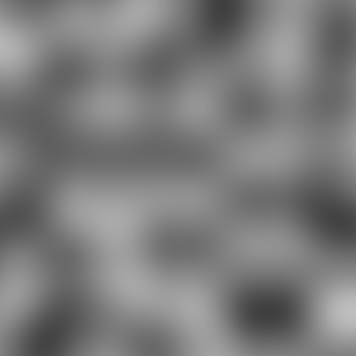
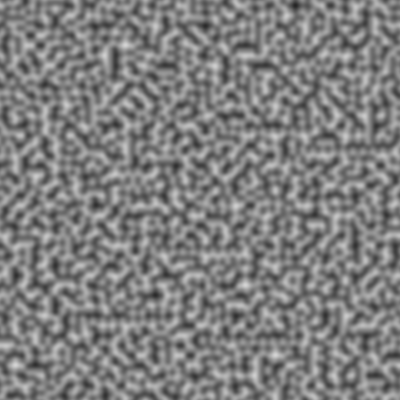

Ce tutoriel a pour but de vous initier à la notion de "fonction de bruit" en informatique, et ensuite de vous faire comprendre le fonctionnement d'une d'entre elles, le bruit de Perlin. Ces fonctions mathématiques sont très utiles notamment dans l'art numérique, et notamment les effets spéciaux dans le cinéma, les jeux vidéos, et j'en passe.
La première fonction de ce genre a été inventé par Ken Perlin pour donner plus de réalisme aux premières images de synthèse. A l'époque, la souris n'en n'était qu'à ses balbutiements, la création des objets (notamment pour le film Tron de 1982) se faisait dans des éditeurs de textes, et les objets étaient des assemblages de formes de base (cube, sphère, etc.). Les éditeurs d'images n'existaient pas encore, et les textures non plus ! Le bruit de Perlin a eu pour vocation de créer automatiquement des textures, pour rajouter du désordre et leur donner un peu plus de réalisme. Les applications à Perlin se sont depuis très largement diversifiées, le bruit de Perlin peut être utilisé dans de très nombreuses situations, la seule limite est votre imagination.
Ce bruit constitue la base pour la génération procédurale d'objets complexes, tels que des arbres, des skybox ou même des planètes entières !
Séparons cette expression en deux. Que fait une simple fonction mathématique ? Elle possède un certain nombre de paramètres d'entrée, fait des calculs à l'aide de ces paramètres et renvoie une (ou plusieurs) valeur(s) en sortie. Dans un contexte de programmation, c'est exactement la même chose, excepté qu'une fonction ne renverra qu'une seule valeur en sortie.
Maintenant, qu'est ce qu'un bruit ? Dans la vie courante, ce terme représente un grand nombre d'effets, tels "la neige" sur votre téléviseur, le grésillement des enceintes de votre chaîne Hi-Fi, le brouhaha dans les endroits bondés de monde. En informatique cependant, le bruit n'as pas une connotation négative, bien au contraire. C'est le terme utilisé lorsque l'on cherche à simuler de l'aléatoire.
Pourquoi simuler l'aléatoire ?
Tout simplement car notre monde réel l'est, et par conséquent un jeu vidéo ou une image de synthèse seront d'autant plus crédibles si ils contiennent des éléments aux propriétés aléatoires.
Si vous êtes bon observateur, vous avez peut être remarqué une autre caractéristique dans le monde réel : la cohérence. Les nuages dans le ciel par exemple, ont tous des formes différentes, mais présente des caractéristiques communes, leur couleur par exemple. Ils ne sont pas blanc et violet et orange, non, ils sont blancs avec de légères variations. Ils ont donc des caractéristiques aléatoires mais aussi cohérentes.
Les fonctions de bruit sont donc des fonctions mathématiques qui permettront de simuler de l'aléatoire, avec la possibilité d'avoir une cohérence dans ce bruit.
Exemple d'application
L'application la plus populaire d'une fonction de bruit est la génération d'un terrain. En informatique, un terrain est simplement un assemblage de triangles dont on modifie l'altitude de chaque point, en fonction d'une image de hauteur (appelée communément heightmap, qui signifie carte d'altitude).
En superposant le maillage du terrain (pour l'instant totalement plat) et la heightmap, on peut trouver à quel pixel correspond chaque sommet des triangles du terrain. Il est alors aisé de donner à ce sommet une hauteur proportionnelle à la valeur de gris du pixel. En appliquant cette méthode sur tout les points, vous obtenez un terrain correspondant à cette heightmap.
Pour vous faire une idée du maillage du terrain avant/après :
Ce terrain a belle allure, mais j'ai omis un détail. Il n'a pas été généré avec une heightmap mais avec une fonction de bruit ! La fonction de bruit permet donc d'obtenir le même résultat, mais présente quelques avantages supplémentaires. Pour obtenir ce terrain, j'ai utilisé une fonction de bruit appelée NOISE dont voici la forme :
réel NOISE(réel x, réel y)
Les coordonnées (x,y) envoyées en paramètres de la fonction correspondent aux coordonnées d'un point P quelconque. La fonction renvoie en sortie un nombre réel, qui correspond ici à l'altitude à donner au point P. Il faut donc déformer tous les points du terrain un par un en appelant cette fonction pour chacun d'entre eux pour obtenir le terrain final.
Vous verrez comment fonctionne NOISE dans la prochaine partie. Cette fonction possède plusieurs propriétés intéressantes :
Elle génère un bruit simple qui simule l'aléatoire, et pour un point (x,y) donné, elle renverra toujours la même valeur.
Elle génère un bruit cohérent.
Utilisation de ressources : elle utilise beaucoup moins de mémoire qu'une heightmap, et présente un niveau de précision identique (si vous mettez en place une méthode d'interpolation sur l'image).
Espace infini : la fonction peut être utilisée pour n'importe quelle valeur de (x,y). Un détail cependant, le bruit se répète au bout de 256 unités, mais dans la pratique ce défaut est invisible (et il peut même être tourné en avantage si l'on veut avoir une image raccordable).
L'algorithme que je vais vous présenter fonctionne en deux dimensions mais est très facilement extensible en 3D,4D et même bien plus.
Tout d'abord, imaginez une grille infinie qui subdivise l'espace en cases carrées de largeur unitaire. Les intersections des lignes et des colonnes seront des points donc les coordonnées peuvent être exprimées avec des nombres entiers.
A chaque fois que la fonction sera appelée pour un couple (x,y), elle déterminera la position des 4 sommets des carrés les plus proches.
Si on prends un point P au hasard, par exemple P(5.5,4.5) ça nous donne le schéma suivant :

Visuellement on voit bien que le point P est entouré des sommets (5.0,4.0) (6.0,4.0) (6.0,5.0) (5.0,5.0). Il suffit donc d'enlever la partie fractionnaire des coordonnées de P pour obtenir facilement les coordonnées des quatre sommets.
Maintenant, à chacun des 4 sommets, la fonction va associer pseudo-aléatoirement un vecteur 2D de longueur unitaire.
Tableau de gradients
Tout d'abord on créé un tableau contenant un ensemble de directions. Le tableau contient au total 8 vecteurs 2D de longueur unitaire :
unit = 1.0/sqrt(2)
gradient2[8][2] = {{unit,unit},{-unit,unit},{unit,-unit},{-unit,-unit},
{1,0}, {-1,0}, {0,1}, {0,-1}}
Table de permutation
Le second tableau est véritablement la colonne vertébrale de votre fonction de bruit. C'est une table de permutation contenant une seule fois chaque nombre de 0 à 255, mis dans le désordre. Pour changer le bruit généré, il suffira de mélanger à nouveau cette table.
Table de permutation ? Quesako ?
Ce terme peut avoir de nombreuses significations. Ici, c'est avant tout un tableau de nombres que nous allons utiliser d'une façon un peu particulière pour simuler du désordre (du pseudo-aléatoire).
Le seul critère ici est que la table soit assez bien mélangée. En voici une toute prête :
Pour simplifier le code par la suite, je n'utilise pas directement cette table mais un tableau de 512 cases contenant deux fois celle-ci, une première fois de l'indice 0 à 255, puis une deuxième fois de l'indice 256 à 511. Le petit algorithme que j'utilise pour faire la copie :
for i = 0 to 511
permtable[i] = perm[i & 255]
Rappelez vous, nous voulons associer un des vecteurs du premier tableau à chacun des quatre sommets du carré englobant. Voici comment on procède pour la première dont les coordonnées sont (x0,y0) et la dernière (x0+1,y0+1) :
//On fait un masquage, ii et jj sont compris entre 0 et 255
ii = x0 & 255
jj = y0 & 255
//Une manière un peu particulière de créer du désordre
// Le modulo (%) 8 limite les valeurs de grad1 et grad4 entre 0 et 7
grad1 = permtable[ii + permtable[jj]] % 8
grad4 = permtable[ii + 1 + permtable[jj + 1]] % 8
//On récupère simplement les valeurs des vecteurs
vecteurPremier.x = gradient2[grad1][0]
vecteurPremier.y = gradient2[grad1][1]
vecteurDernier.x = gradient2[grad4][0]
vecteurDernier.y = gradient2[grad4][1]
Alors que fait ce pseudo-code ? La seule difficulté réside dans les lignes 6 et 7. Rappelez vous, la table contient des nombres en désordre. On utilise une première fois la table pour obtenir un nombre au hasard. On additionne ce nombre avec ii, et on utilise cette nouvelle valeur une fois de plus dans la table pour obtenir la valeur finale du sommet. Cette valeur est ensuite utilisée comme indice dans le premier tableau de 8 vecteurs.
Si vous avez bien compris l'idée, bravo, sinon pas la peine de s'inquiéter, ça viendra tout seul avec le temps.
Il nous manque encore les valeurs associées aux deux autres sommets, prenez deux minutes pour y réfléchir et la formule devrait venir toute seule :
Maintenant que nous avons ces quatre valeurs, il nous faut trouver la valeur associée à P. Un petit schéma pour résumer :

Ici, l'idée est simple. Chaque sommet va contribuer à la valeur finale de P.
Plus un vecteur d'un sommet va pointer vers P, plus sa contribution sera grande, donc plus la hauteur de P va augmenter (sur une image, plus la couleur du pixel P sera proche du blanc). A l'inverse, si un vecteur pointe plutôt à l'opposé, sa contribution sera faible.
Second critère, plus P sera proche d'un sommet, plus il sera sensible à la contribution de ce sommet. Cette étape est appelée interpolation.
Contributions
On commence par calculer les 4 contributions :
//(x,y) représente les coordonnées du point P
s = gradA . ((x, y) - (x0, y0)) //(x0,y0) = coordonnées du point A
t = gradD . ((x, y) - (x0, y0+1)) //(x0,y0+1) = coordonnées du point D
u = gradB . ((x, y) - (x0+1, y0)) //etc.
v = gradC . ((x, y) - (x0+1, y0+1))
Interpolation
Maintenant on va pondérer les contributions, en réalisant une interpolation. Pour obtenir la hauteur finale, on va interpoler ces valeurs deux par deux selon l'axe des abscisses (x), puis les deux valeurs intermédiaires selon l'axe des ordonnées.
//on calcule le coefficient d'interpolation (selon x)
Sx = 3*(x-x0)*(x-x0) - 2*(x-x0)*(x-x0)*(x-x0)
//on lisse les valeurs 2 à 2
stLisse = s + Sx*(t-s)
uvLisse = u + Sx*(v-u)
//on calcule le 2ème coefficient d'interpolation (selon y)
Sy = 3*(y-y0)*(y-y0) - 2*(y-y0)*(y-y0)*(y-y0)
//Le résultat final
valeurFinale = stLisse + Sy*(uvLisse-stLisse)
C'est une méthode simplissime d'interpolation, cela ne devrait pas poser de problème. Pour lisser les valeurs, j'ai utilisé la fonction y = 3x^{2}-2x^{3}{. Les résultats sont beaucoup plus doux qu'avec une interpolation linéaire, et la fonction vaut quand même zéro pour x=0 et 1 pour x=1.
Générer une image est assez simple. Le code ci-dessus renverra toujours des valeurs comprises dans l'intervalle [-1,1]. La couleur d'un pixel est comprise entre 0 et 255 pour une image en niveaux de gris. Il faut donc passer de [-1,1] à [0,255]. Le code est évident :
valeur = (Get2DPerlinNoiseValue(float x, float y, float res)+1)*0.5*255;
Il ne vous reste plus qu'a donner à chaque pixel une couleur dont chaque composante vaut "valeur", et à faire cela pour chaque pixel.
Voici d'ailleurs l'image que j'obtiens avec le code d'exemple (l'image fait 400*400 pixels, res = 100.0) :

La méthode est exactement la même pour générer un terrain, sauf que vous n'avez pas besoin de créer d'image, et donc pas besoin de transformer l'intervalle de la même façon. Pour un terrain dont les altitudes seront comprises entre -100 et 100 :
altitude = Get2DPerlinNoiseValue(float x, float y, float res)*100;
Simple n'est-ce pas ?
Un dernier point de détail, vous avez pu remarquer la présence d'un troisième argument à la fonction, nommé "res". C'est la résolution du bruit, plus cette valeur du bruit sera petite, plus le zoom sera faible, et inversement :

résolution = 10.0
résolution = 500.0
Performances
Si vous essayez ce code pour générer de grandes images, vous avez pu vous rendre compte que la génération n'est pas franchement instantanée. Sachez que le code complet que je vous ai donné en exemple réalise quelques optimisations, mais il est possible de l'améliorer encore plus. Comment en accélérer sa vitesse ? Voici une liste d'idées :
Utiliser un language orienté objet, et faire en sorte que les tableaux et toutes les variables temporaires soient créées lors de la construction de l'objet, au lieu d'être créés à chaque appel de la fonction. Cela peut paraître rien, mais ça améliore énormément les performances.
Utiliser le multithreading. Le nombre de threads supplémentaires ne devra pas excéder le nombre de coeurs du processeur pour en tirer le meilleur parti.
A propos des bruits
Perlin est la plus connue des fonctions de bruit, mais il en existe bien d'autre. Je citerais notamment Simplex et Cell pour les bruits simple. Simplex est à ma connaissance le bruit cohérent le plus rapide dès qu'on dans une dimension supérieure à 2. Il est même extrêmement plus rapide que tous les autres.
En deux dimensions, un Perlin bien optimisé reste plus rapide.
Il existe aussi des bruits complexes tels que Fractionnal Brownian Motion noise(FBM) et Hybrid Multifractal noise. Ces deux-là sont produits par association pondérée de bruits simples de différentes résolutions. Ces deux bruits excellent dans la génération de terrains.
Cet algorithme peut avoir quantité d'applications : textures procédurales, shader d'océan, génération de terrain, etc. A vous d'expérimenter, et bien sûr de poster vos résultats sur les forums !
Pour ceux qui seraient intéressés, j'ai codé une petite bibliothèque C++ qui regroupe plusieurs de ces bruits (Perlin,Simplex,FBM,Hybrid Multifractal, etc). Tout est disponible sur le topic.
{kind=link}
{kind=link}
{kind=link}